集群和分布式 系统性能扩展方式：
Scale UP：垂直扩展，向上扩展,增强，性能更强的计算机运行同样的服务
Scale Out：水平扩展，向外扩展,增加设备，并行地运行多个服务调度分配问题，Cluster
垂直扩展不再提及： 随着计算机性能的增长，其价格会成倍增长
单台计算机的性能是有上限的，不可能无限制地垂直扩展
多核CPU意味着即使是单台计算机也可以并行的。那么，为什么不一开始就并行化技术？
集群 Cluster Cluster：集群,为解决某个特定问题将多台计算机组合起来形成的单个系统
Cluster 分为三种类型：
LB：Load Balancing，负载均衡，多个主机组成，每个主机只承担一部分访问请求
HA：High Availiablity，高可用，避免SPOF（single Point Of failure）
MTBF:Mean Time Between Failure 平均无故障时间，正常时间
MTTR:Mean Time To Restoration（ repair）平均恢复前时间，故障时间
A = MTBF /（MTBF+MTTR） (0,1)：99%,99.5%,99.9%,99.99%,99.999%
SLA ：服务等级协议（简称：SLA，全称：service level agreement）。是在一定开销下为保障服务的性能和可用性，服务提供商与用户间定义的一种双方认可的协定。通常这个开销是驱动提供服务质量的主要因素。在常规的领域中，总是设定所谓的三个9，四个9来进行表示，当没有达到这种水平的时候，就会有一些列的惩罚措施，而运维，最主要的目标就是达成这种服务水平。
1 2 3 4 5 6 7 1年 = 365天 = 8760小时 90 = (1-90%)*365=36.5天 99 = 8760 * 1% = 87.6小时 99.9 = 8760 * 0.1% = 8760 * 0.001 = 8.76小时 99.99 = 8760 * 0.0001 = 0.876小时 = 0.876 * 60 = 52.6分钟 99.999 = 8760 * 0.00001 = 0.0876小时 = 0.0876 * 60 = 5.26分钟 99.9999= (1-99.9999%)*365*24*60*60=31秒
停机时间又分为两种，一种是计划内停机时间，一种是计划外停机时间，而运维则主要关注计划外停机时间。
分布式系统 分布式常见应用
分布式应用-服务按照功能拆分，使用微服务
分布式静态资源–静态资源放在不同的存储集群上
分布式数据和存储–使用key-value缓存系统
分布式计算–对特殊业务使用分布式计算，比如Hadoop集群
分布式存储： Ceph，GlusterFS，FastDFS，MogileFS 分布式计算：hadoop，Spark
集群和分布式 集群：同一个业务系统部署在多台服务器上。集群中每一台服务器实现的功能没有差别，数据和代码都 是一样的
分布式：一个业务被拆成多个子业务，或者本身就是不同的业务，部署在多台服务器上。分布式中，每一台服务器实现的功能是有差别的，数据和代码也是不一样的，分布式每台服务器功能加起来，才是完整的业务
分布式是以缩短单个任务的执行时间来提升效率的，而集群则是通过提高单位时间内执行的任务数来提升效率。
对于大型网站，访问用户很多，实现一个群集，在前面部署一个负载均衡服务器，后面几台服务器完成同一业务。如果有用户进行相应业务访问时，负载均衡器根据后端哪台服务器的负载情况，决定由给哪一台去完成响应，并且一台服务器垮了，其它的服务器可以顶上来。分布式的每一个节点，都完成不同的业务，如果一个节点垮了，那这个业务可能就会失败
LB Cluster 负载均衡集群 按实现方式划分
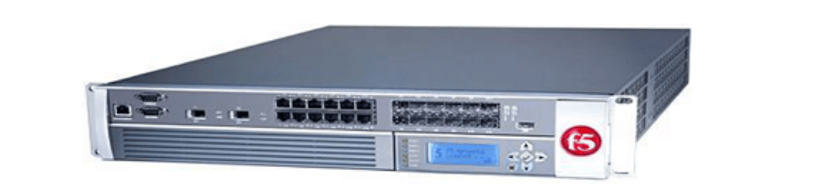
F5 Big-IP https://detail.zol.com.cn/load_leveling/f5/cheap_pic.html?qq-pf-to=pcqq.group
Citrix Netscaler
A10
软件
lvs：Linux Virtual Server，阿里云四层 SLB (Server Load Balance)使用
nginx：支持七层调度，阿里云七层SLB使用Tengine
haproxy：支持七层调度
ats：Apache Traffic Server，yahoo捐助给apache
perlbal：Perl 编写
pound
基于工作的协议层次划分
传输层（通用）：DNAT 和 DPORT
LVS：
nginx：stream
haproxy：mode tcp
应用层（专用）：针对特定协议，常称为 proxy server
http：nginx, httpd, haproxy(mode http), …
fastcgi：nginx, httpd, …
mysql：mysql-proxy, mycat…
负载均衡的会话保持
session sticky：同一用户调度固定服务器
Source IP：LVS sh算法（对某一特定服务而言）
Cookie
session replication：每台服务器拥有全部session
session multicast cluster
session server：专门的session服务器
Redis,Memcached
HA 高可用集群实现 keepalived：vrrp协议
Ais：应用接口规范
heartbeat
man+rgmanager(RHCS)
coresync_pacemaker
Linux Virtual Server 简介 LVS 介绍 LVS：Linux Virtual Server，负载调度器，内核集成，章文嵩（花名 正明）, 阿里的四层SLB(Server Load Balance)是基于LVS+keepalived实现
LVS 是全球最流行的四层负载均衡开源软件，由章文嵩博士（当前阿里云产品技术负责人）在1998年5月创立，可以实现LINUX平台下的负载均衡。
LVS 官网：http://www.linuxvirtualserver.org/
阿里SLB和LVS：
1 2 https://yq.aliyun.com/articles/1803 https://github.com/alibaba/LVS
LVS 工作原理 VS根据请求报文的目标IP和目标协议及端口将其调度转发至某RS，根据调度算法来挑选RS。LVS是内核级功能，工作在INPUT链的位置，将发往INPUT的流量进行“处理”
范例：查看内核支持LVS
1 2 3 4 5 6 7 8 9 10 11 12 13 14 15 16 17 18 19 20 21 22 23 24 25 26 27 28 29 30 31 32 33 34 35 [root@centos8 ~] ...（省略部分内容）... CONFIG_NETFILTER_XT_MATCH_IPVS=m CONFIG_NETFILTER_XT_MATCH_POLICY=m ...（省略部分内容）... CONFIG_IP_VS_PROTO_TCP=y CONFIG_IP_VS_PROTO_UDP=y CONFIG_IP_VS_PROTO_AH_ESP=y CONFIG_IP_VS_PROTO_ESP=y CONFIG_IP_VS_PROTO_AH=y CONFIG_IP_VS_PROTO_SCTP=y CONFIG_IP_VS_RR=m CONFIG_IP_VS_WRR=m CONFIG_IP_VS_LC=m CONFIG_IP_VS_WLC=m CONFIG_IP_VS_FO=m CONFIG_IP_VS_OVF=m CONFIG_IP_VS_LBLC=m CONFIG_IP_VS_LBLCR=m CONFIG_IP_VS_DH=m CONFIG_IP_VS_SH=m CONFIG_IP_VS_SED=m CONFIG_IP_VS_NQ=m ...（省略部分内容）...
LVS 集群体系架构 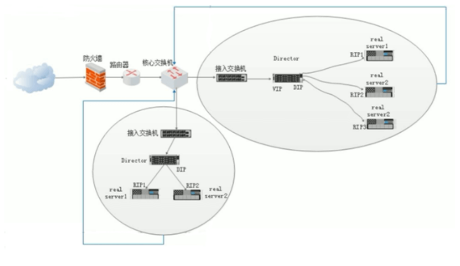
LVS 集群类型中的术语 VS：Virtual Server，Director Server(DS), Dispatcher(调度器)，Load Balancer
RS：Real Server(lvs), upstream server(nginx), backend server(haproxy)
CIP：Client IP
VIP：Virtual server IP VS外网的IP
DIP：Director IP VS内网的IP
RIP：Real server IP
访问流程：CIP <–> VIP == DIP <–> RIP
LVS 工作模式和相关命令 LVS 集群的工作模式
lvs-nat：修改请求报文的目标IP,多目标IP的DNAT
lvs-dr：操纵封装新的MAC地址
lvs-tun：在原请求IP报文之外新加一个IP首部
lvs-fullnat：修改请求报文的源和目标IP,默认内核不支持
LVS 的 NAT 模式 官方链接：
1 http://www.linuxvirtualserver.org/VS-NAT.html
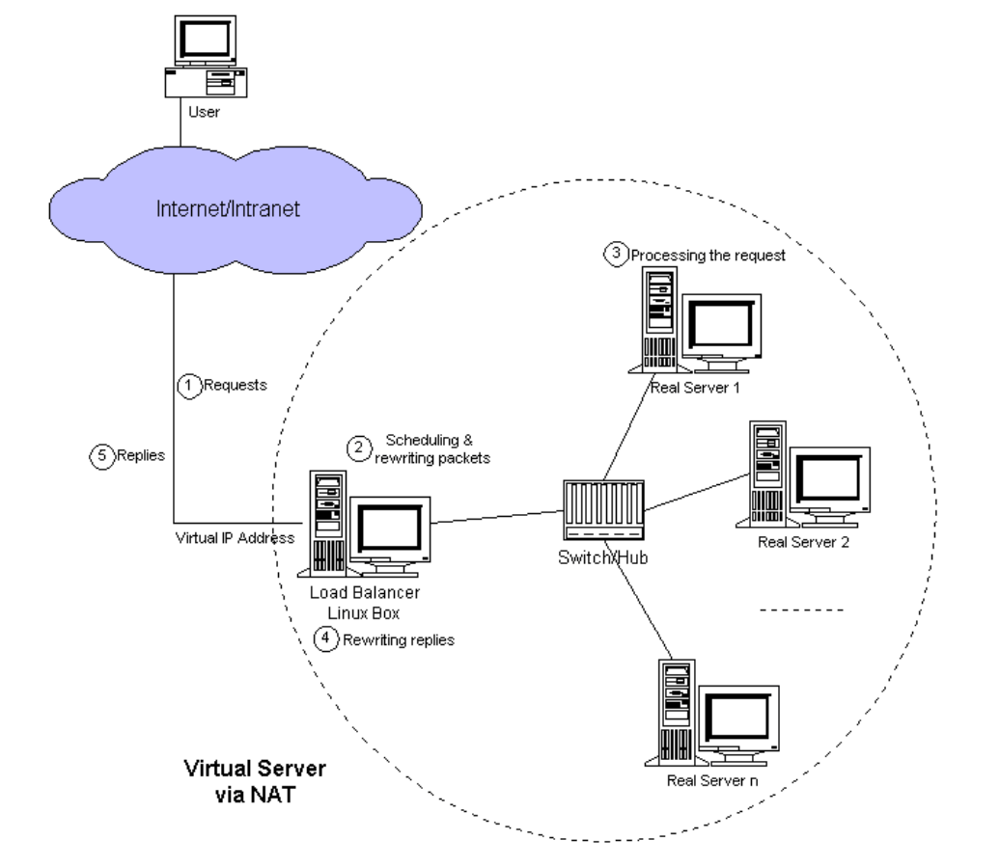
lvs-nat：本质是多目标IP的DNAT，通过将请求报文中的目标地址和目标端口修改为某挑出的RS的RIP和PORT实现转发
（1）RIP和DIP应在同一个IP网络，且应使用私网地址；RS的网关要指向DIP
（2）请求报文和响应报文都必须经由Director转发，Director易于成为系统瓶颈
（3）支持端口映射，可修改请求报文的目标PORT
（4）VS必须是Linux系统，RS可以是任意OS系统
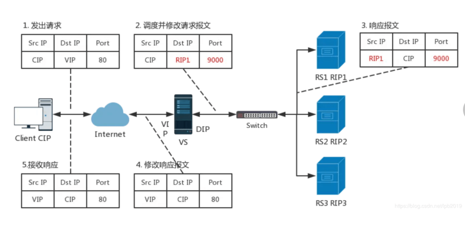
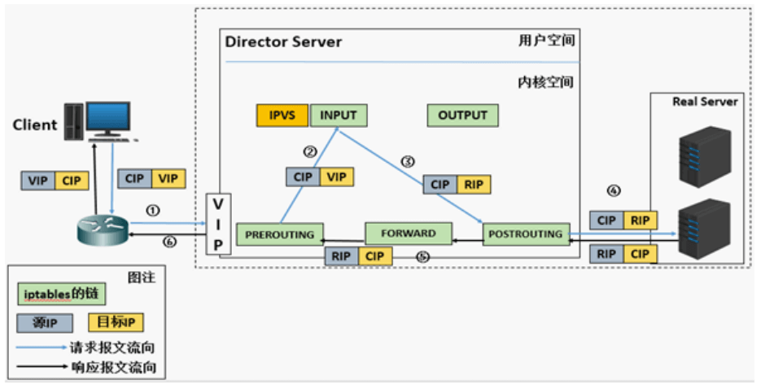
LVS 的 DR 模式 官方链接
1 http://www.linuxvirtualserver.org/VS-DRouting.html
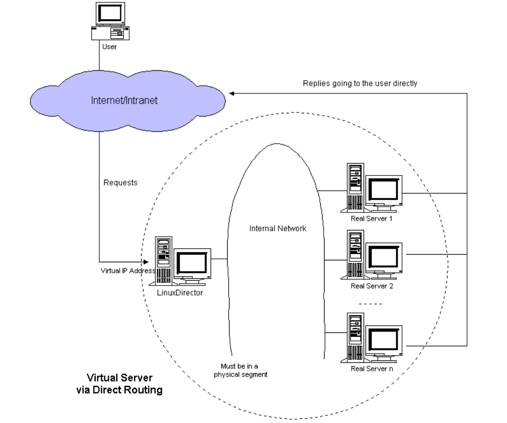
LVS-DR：Direct Routing，直接路由，LVS默认模式,应用最广泛,通过为请求报文重新封装一个MAC首部进行转发，源MAC是DIP所在的接口的MAC，目标MAC是某挑选出的RS的RIP所在接口的MAC地址；源IP/PORT，以及目标IP/PORT均保持不变
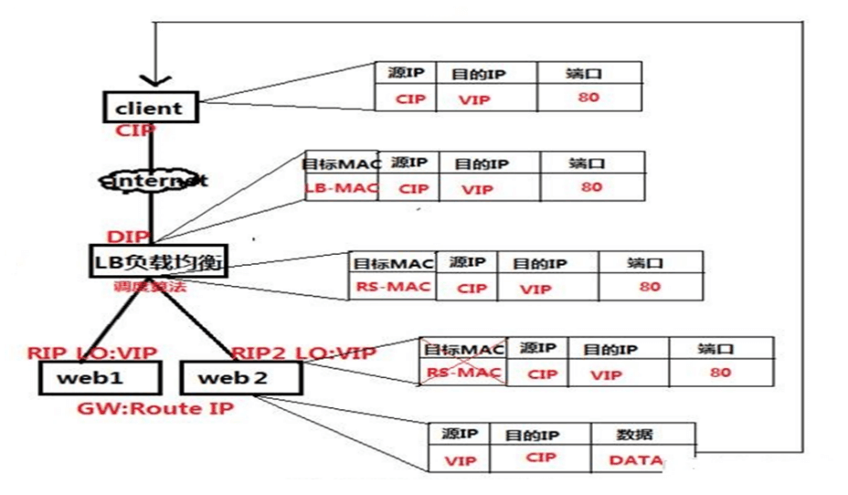
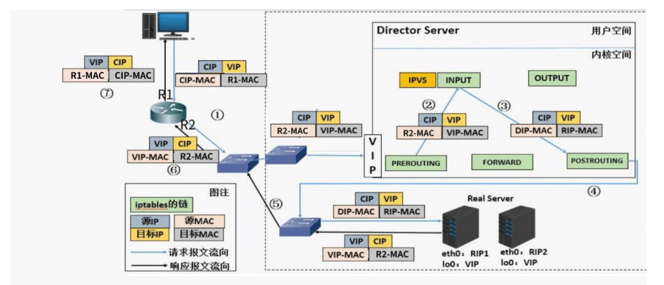
DR模式的特点：
Director和各RS都配置有VIP
确保前端路由器将目标IP为VIP的请求报文发往Director
在前端网关做静态绑定VIP和Director的MAC地址
在RS上使用arptables工具
1 2 arptables -A IN -d $VIP -j DROP arptables -A OUT -s $VIP -j mangle --mangle-ip-s $RIP
1 2 3 不主动不负责不拒绝 /proc/sys/net/ipv4/conf/all/arp_ignore /proc/sys/net/ipv4/conf/all/arp_announce
RS的RIP可以使用私网地址，也可以是公网地址；RIP与DIP在同一IP网络；RIP的网关不能指向DIP，以确保响应报文不会经由Director
RS和Director要在同一个物理网络
请求报文要经由Director，但响应报文不经由Director，而由RS直接发往Client
不支持端口映射（端口不能修改）
无需开启 ip_forward
RS可使用大多数OS系统
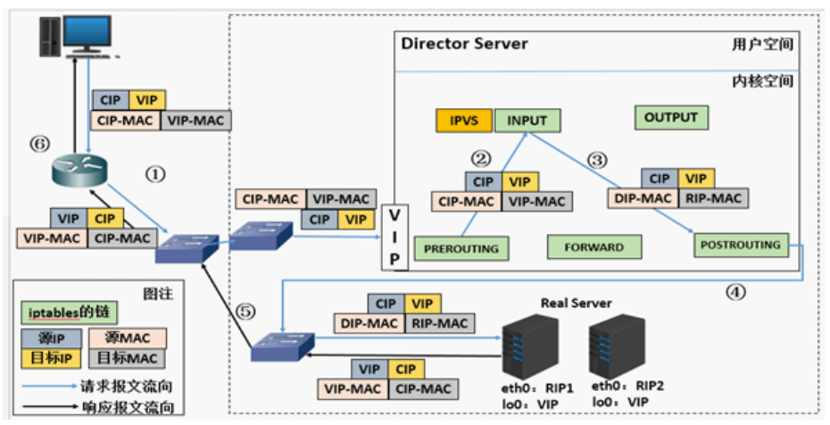
LVS 的 TUN 模式 官方链接
1 http://www.linuxvirtualserver.org/VS-IPTunneling.html
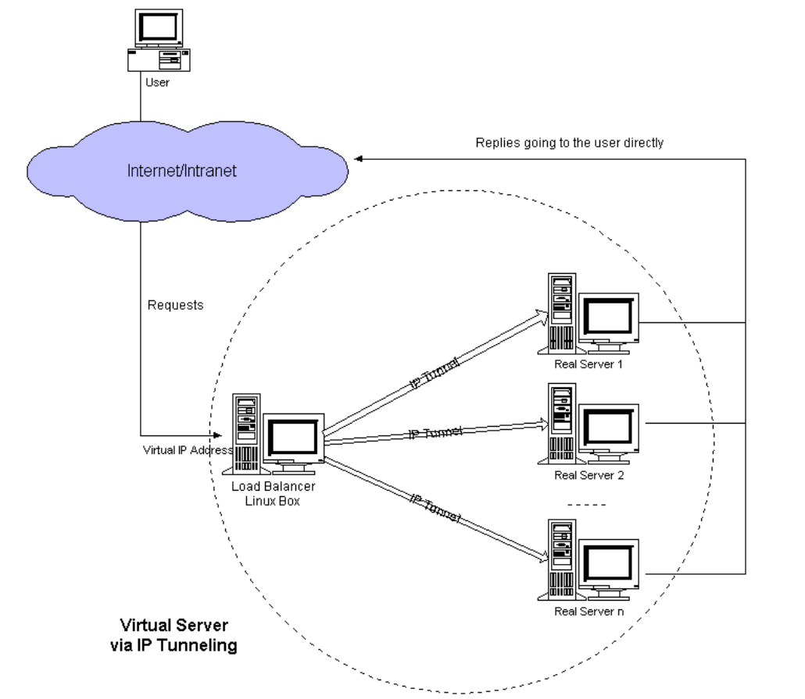
转发方式：不修改请求报文的IP首部（源IP为CIP，目标IP为VIP），而在原IP报文之外再封装一个IP首部（源IP是DIP，目标IP是RIP），将报文发往挑选出的目标RS；RS直接响应给客户端（源IP是VIP，目标IP是CIP）
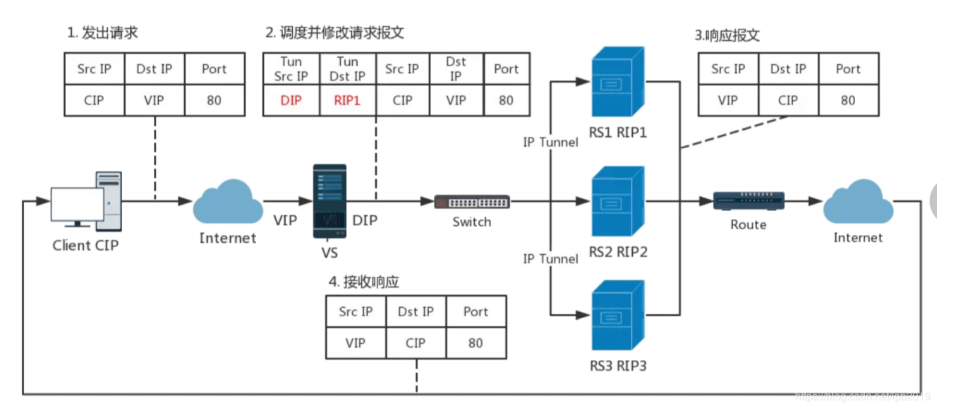
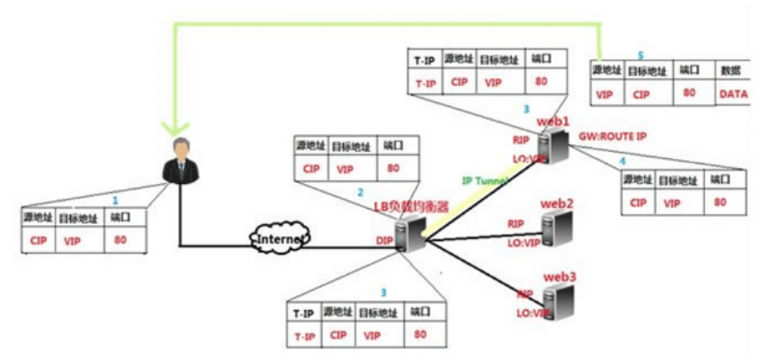
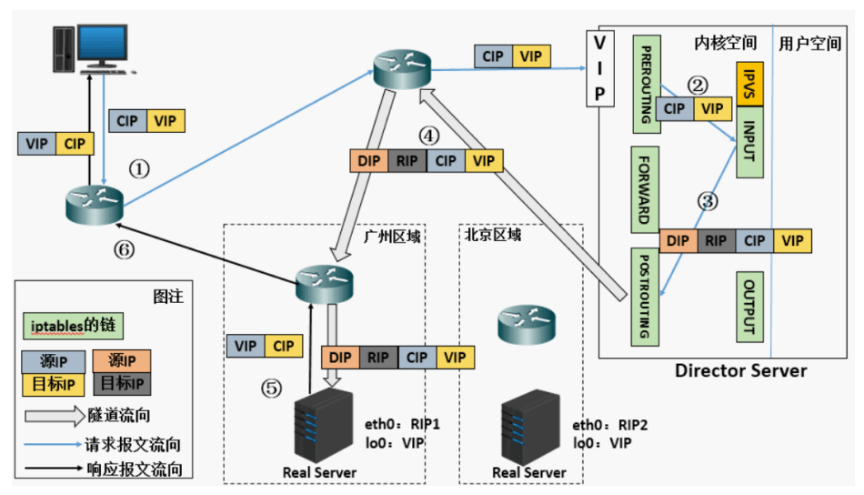
TUN模式特点：
RIP和DIP可以不处于同一物理网络中，RS的网关一般不能指向DIP,且RIP可以和公网通信。也就是说集群节点可以跨互联网实现。DIP, VIP, RIP可以是公网地址
RealServer的tun接口上需要配置VIP地址，以便接收director转发过来的数据包，以及作为响应的报文源IP
Director转发给RealServer时需要借助隧道，隧道外层的IP头部的源IP是DIP，目标IP是RIP，而 RealServer响应给客户端的IP头部是根据隧道内层的IP头分析得到的，源IP是VIP，目标IP是CIP
请求报文要经由Director，但响应不经由Director,响应由RealServer自己完成
不支持端口映射
RS的OS须支持隧道功能
应用场景:
1 2 3 4 5 一般来说，TUN模式常会用来负载调度缓存服务器组，这些缓存服务器一般放置在不同的网络环境，可以就近 折返给客户端。在请求对象不在Cache服务器本地命中的情况下，Cache服务器要向源服务器发送请求，将结 果取回，最后将结果返回给用户。 LAN环境一般多采用DR模式，WAN环境虽然可以用TUN模式，但是一般在WAN环境下，请求转发更多的被 haproxy/nginx/DNS等实现。因此，TUN模式实际应用的很少,跨机房的应用一般专线光纤连接或DNS调度
LVS 的 FULLNAT 模式 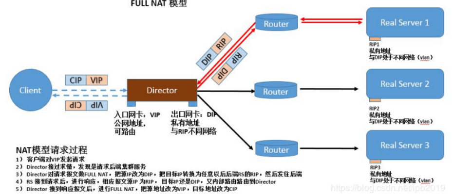
通过同时修改请求报文的源IP地址和目标IP地址进行转发
CIP –> DIP
VIP –> RIP
fullnat模式特点：
VIP是公网地址，RIP和DIP是私网地址，且通常不在同一IP网络；因此，RIP的网关一般不会指向DIP
RS收到的请求报文源地址是DIP，因此，只需响应给DIP；但Director还要将其发往Client
请求和响应报文都经由Director
相对NAT模式，可以更好的实现LVS-RealServer间跨VLAN通讯
支持端口映射
注意：此类型kernel默认不支持
LVS工作模式总结和比较 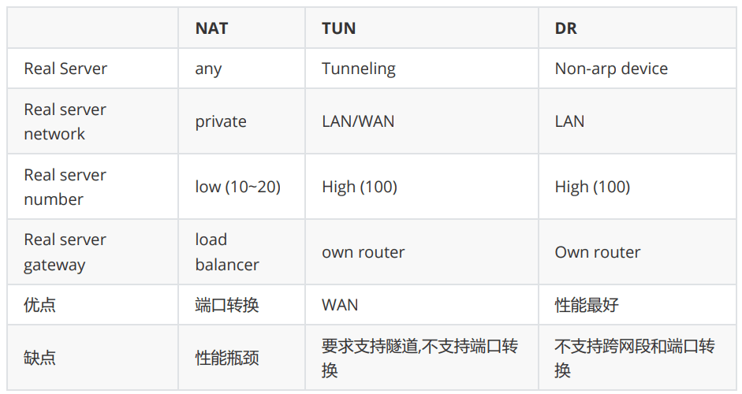
lvs-nat与lvs-fullnat：
请求和响应报文都经由Director
lvs-nat：RIP的网关要指向DIP
lvs-fullnat：RIP和DIP未必在同一IP网络，但要能通信
lvs-dr与lvs-tun：
请求报文要经由Director，但响应报文由RS直接发往Client
lvs-dr：通过封装新的MAC首部实现，通过MAC网络转发
lvs-tun：通过在原IP报文外封装新IP头实现转发，支持远距离通信
LVS 调度算法 ipvs scheduler：根据其调度时是否考虑各RS当前的负载状态
分为两种：静态方法和动态方法
静态方法 仅根据算法本身进行调度
1、RR：roundrobin，轮询,较常用，雨露均沾，大锅饭
2、WRR：Weighted RR，加权轮询,较常用
3、SH：Source Hashing，实现session sticky，源IP地址hash；将来自于同一个IP地址的请求始终发往第一次挑中的RS，从而实现会话绑定
4、DH：Destination Hashing；目标地址哈希，第一次轮询调度至RS，后续将发往同一个目标地址的请求始终转发至第一次挑中的RS，典型使用场景是正向代理缓存场景中的负载均衡,如: Web缓存
动态方法 主要根据每RS当前的负载状态及调度算法进行调度Overhead=value 较小的RS将被调度
1、LC：least connections 适用于长连接应用
1 Overhead=activeconns*256+inactiveconns
2、WLC：Weighted LC，默认调度方法,较常用
1 Overhead=(activeconns*256+inactiveconns)/weight
3、SED：Shortest Expection Delay，初始连接高权重优先,只检查活动连接,而不考虑非活动连接
1 Overhead=(activeconns+1)*256/weight
4、NQ：Never Queue，第一轮均匀分配，后续SED
5、LBLC：Locality-Based LC，动态的DH算法，使用场景：根据负载状态实现正向代理,实现Web Cache等
6、LBLCR：LBLC with Replication，带复制功能的LBLC，解决LBLC负载不均衡问题，从负载重的复制到负载轻的RS,,实现Web Cache等
内核版本 4.15 版本后新增调度算法：FO和OVF FO（Weighted Fail Over）调度算法,在此FO算法中，遍历虚拟服务所关联的真实服务器链表，找到还未过载（未设置IP_VS_DEST_F_OVERLOAD标志）的且权重最高的真实服务器，进行调度,属于静态算法
OVF（Overflow-connection）调度算法，基于真实服务器的活动连接数量和权重值实现。将新连接调度到权重值最高的真实服务器，直到其活动连接数量超过权重值，之后调度到下一个权重值最高的真实服务器,在此OVF算法中，遍历虚拟服务相关联的真实服务器链表，找到权重值最高的可用真实服务器。属于动态算法
一个可用的真实服务器需要同时满足以下条件：
未过载（未设置IP_VS_DEST_F_OVERLOAD标志）
真实服务器当前的活动连接数量小于其权重值
其权重值不为零
LVS 相关软件 程序包：ipvsadm Unit File: ipvsadm.service
主程序：/usr/sbin/ipvsadm
规则保存工具：/usr/sbin/ipvsadm-save
规则重载工具：/usr/sbin/ipvsadm-restore
配置文件：/etc/sysconfig/ipvsadm-config
ipvs调度规则文件：/etc/sysconfig/ipvsadm
ipvsadm 命令 ipvsadm核心功能：
集群服务管理：增、删、改
集群服务的RS管理：增、删、改
查看
ipvsadm 工具用法：
1 2 3 4 5 6 7 8 9 10 11 12 13 ipvsadm -A|E -t|u|f service-address [-s scheduler] [-p [timeout ]] [-M netmask] [--pe persistence_engine] [-b sched-flags] ipvsadm -D -t|u|f service-address ipvsadm –C ipvsadm –R ipvsadm -S [-n] ipvsadm -a|e -t|u|f service-address -r server-address [-g|i|m] [-w weight] ipvsadm -d -t|u|f service-address -r server-address ipvsadm -L|l [options] ipvsadm -Z [-t|u|f service-address]
管理集群服务：增、改、删
增、修改：
1 ipvsadm -A|E -t|u|f service-address [-s scheduler] [-p [timeout]]
说明
1 2 3 4 5 6 7 service-address： -t|u|f： -t: TCP协议的端口，VIP:TCP_PORT 如: -t 10.0.0.100:80 -u: UDP协议的端口，VIP:UDP_PORT -f：firewall MARK，标记，一个数字 [-s scheduler]：指定集群的调度算法，默认为wlc
范例:
1 ipvsadm -A -t 10.0.0.100:80 -s wrr
删除：
1 ipvsadm -D -t|u|f service-address
管理集群上的RS：增、改、删
增、改：
1 ipvsadm -a|e -t|u|f service-address -r server-address [-g|i|m] [-w weight]
删：
1 ipvsadm -d -t|u|f service-address -r server-address
1 2 3 4 5 6 7 8 9 server-address： rip[:port] 如省略port，不作端口映射 选项： lvs类型： -g: gateway, dr类型，默认 -i: ipip, tun类型 -m: masquerade, nat类型 -w weight：权重
范例:
1 ipvsadm -a -t 10.0.0.100:80 -r 10.0.0.8:8080 -m -w 3
清空定义的所有内容：
清空计数器：
1 ipvsadm -Z [-t|u|f service-address]
查看：
1 2 3 4 5 --numeric, -n：以数字形式输出地址和端口号 --exact：扩展信息，精确值 --connection，-c：当前IPVS连接输出 --stats：统计信息 --rate ：输出速率信息
ipvs规则：
ipvs连接：
保存：建议保存至/etc/sysconfig/ipvsadm
1 2 3 ipvsadm-save > /PATH/TO/IPVSADM_FILE ipvsadm -S > /PATH/TO/IPVSADM_FILE systemctl stop ipvsadm.service
重载：
1 2 ipvsadm-restore < /PATH/FROM/IPVSADM_FILE systemctl start ipvsadm.service
范例： Ubuntu系统保存规则和开机加载规则
1 2 3 4 5 6 7 8 9 10 11 12 13 14 15 16 17 18 [root@ubuntu2204 ~] * Saving IPVS configuration... [ OK ] [root@ubuntu2204 ~] -A -t 192.168.10.100:80 -s wlc -a -t 192.168.10.100:80 -r 10.0.0.7:80 -g -w 1 -a -t 192.168.10.100:80 -r 10.0.0.17:80 -g -w 1 [root@ubuntu2004 ~] [root@ubuntu2004 ~] AUTO="true"
范例：红帽系统保存规则和开机加载规则
1 2 3 4 5 [root@rocky8 ~] [root@rocky8 ~]
防火墙标记 FWM：FireWall Mark
MARK target 可用于给特定的报文打标记
–set-mark value
其中：value 可为0xffff格式，表示十六进制数字
借助于防火墙标记来分类报文，而后基于标记定义集群服务；可将多个不同的应用使用同一个集群服务进行调度
实现方法：
在Director主机打标记：
1 iptables -t mangle -A PREROUTING -d $vip -p $proto -m multiport --dports $port1 ,$port2 ,… -j MARK --set-mark NUMBER
在Director主机基于标记定义集群服务：
1 ipvsadm -A -f NUMBER [options]
范例:
1 2 3 4 5 6 7 8 9 10 11 12 13 14 15 16 17 18 19 [root@lvs ~] [root@lvs ~] [root@lvs ~] [root@lvs ~] [root@lvs ~] [root@lvs ~] IP Virtual Server version 1.2.1 (size=4096) Prot LocalAddress:Port Scheduler Flags -> RemoteAddress:Port Forward Weight ActiveConn InActConn FWM 10 rr -> 10.0.0.7:0 Route 1 0 0 -> 10.0.0.17:0 Route 1 0 0 [root@lvs ~] IP Virtual Server version 1.2.1 (size=4096) Prot LocalAddress:Port Scheduler Flags -> RemoteAddress:Port Forward Weight ActiveConn InActConn FWM 0000000A rr -> 0A000011:0000 Route 1 0 9 -> 0A000007:0000 Route 1 0 9
范例:
1 2 3 4 5 6 7 8 9 10 11 12 13 14 15 16 17 18 19 [root@lvs ~] [root@lvs ~] [root@lvs ~] [root@lvs ~] IP Virtual Server version 1.2.1 (size=4096) Prot LocalAddress:Port Scheduler Flags -> RemoteAddress:Port Forward Weight ActiveConn InActConn FWM 10 wlc -> 10.0.0.7:0 Route 1 0 0 -> 10.0.0.17:0 Route 1 0 0 [root@LVS ~] IP Virtual Server version 1.2.1 (size=4096) Prot LocalAddress:Port Scheduler Flags -> RemoteAddress:Port Forward Weight ActiveConn InActConn TCP AC14C8C8:0050 rr -> 0A000011:0050 Masq 1 0 0 -> 0A000007:0050 Masq 1 0 0
LVS 持久连接 session 绑定：对共享同一组RS的多个集群服务，需要统一进行绑定，lvs sh算法无法实现
持久连接（ lvs persistence ）模板：实现无论使用任何调度算法，在一段时间内（默认360s ），能够实现将来自同一个地址的请求始终发往同一个RS
1 ipvsadm -A|E -t|u|f service-address [-s scheduler] [-p [timeout ]]
持久连接实现方式：
每端口持久（PPC）：每个端口定义为一个集群服务，每集群服务单独调度
每防火墙标记持久（PFWMC）：基于防火墙标记定义集群服务；可实现将多个端口上的应用统一 调度，即所谓的port Affinity
每客户端持久（PCC）：基于0端口（表示所有服务）定义集群服务，即将客户端对所有应用的请求都调度至后端主机，必须定义为持久模式
范例：
1 2 3 4 5 6 7 8 9 10 11 12 13 14 15 16 17 18 19 20 21 22 23 24 25 26 27 28 29 30 31 32 33 34 35 36 37 38 39 40 41 42 43 44 45 46 47 48 49 50 51 52 53 54 55 56 [root@lvs ~] [root@lvs ~] IP Virtual Server version 1.2.1 (size=4096) Prot LocalAddress:Port Scheduler Flags -> RemoteAddress:Port Forward Weight ActiveConn InActConn FWM 10 wlc persistent 360 -> 10.0.0.7:0 Route 1 0 15 -> 10.0.0.17:0 Route 1 0 7 [root@lvs ~] [root@lvs ~] IP Virtual Server version 1.2.1 (size=4096) Prot LocalAddress:Port Scheduler Flags -> RemoteAddress:Port Forward Weight ActiveConn InActConn FWM 10 wlc persistent 3600 -> 10.0.0.7:0 Route 1 0 79 -> 10.0.0.17:0 Route 1 0 7 [root@lvs ~] Pro FromIP FPrt ToIP TPrt DestIP DPrt State Expires PEName PEData TCP C0A80006 C816 AC100064 01BB 0A000011 01BB FIN_WAIT 67 TCP C0A80006 C812 AC100064 01BB 0A000011 01BB FIN_WAIT 67 TCP C0A80006 9A36 AC100064 0050 0A000011 0050 FIN_WAIT 65 TCP C0A80006 C806 AC100064 01BB 0A000011 01BB FIN_WAIT 65 TCP C0A80006 9A3E AC100064 0050 0A000011 0050 FIN_WAIT 66 TCP C0A80006 C81A AC100064 01BB 0A000011 01BB FIN_WAIT 67 TCP C0A80006 C80A AC100064 01BB 0A000011 01BB FIN_WAIT 66 TCP C0A80006 9A3A AC100064 0050 0A000011 0050 FIN_WAIT 66 TCP C0A80006 9A4E AC100064 0050 0A000011 0050 FIN_WAIT 68 TCP C0A80006 9A42 AC100064 0050 0A000011 0050 FIN_WAIT 67 TCP C0A80006 9A46 AC100064 0050 0A000011 0050 FIN_WAIT 67 TCP C0A80006 C81E AC100064 01BB 0A000011 01BB FIN_WAIT 68 IP C0A80006 0000 0000000A 0000 0A000011 0000 NONE 948 TCP C0A80006 C80E AC100064 01BB 0A000011 01BB FIN_WAIT 66 TCP C0A80006 9A4A AC100064 0050 0A000011 0050 FIN_WAIT 67 [root@lvs ~] IPVS connection entries pro expire state source virtual destination TCP 00:46 FIN_WAIT 192.168.10.6:51222 172.16.0.100:443 10.0.0.17:443 TCP 00:46 FIN_WAIT 192.168.10.6:51218 172.16.0.100:443 10.0.0.17:443 TCP 00:45 FIN_WAIT 192.168.10.6:39478 172.16.0.100:80 10.0.0.17:80 TCP 00:45 FIN_WAIT 192.168.10.6:51206 172.16.0.100:443 10.0.0.17:443 TCP 00:46 FIN_WAIT 192.168.10.6:39486 172.16.0.100:80 10.0.0.17:80 TCP 00:47 FIN_WAIT 192.168.10.6:51226 172.16.0.100:443 10.0.0.17:443 TCP 00:45 FIN_WAIT 192.168.10.6:51210 172.16.0.100:443 10.0.0.17:443 TCP 00:45 FIN_WAIT 192.168.10.6:39482 172.16.0.100:80 10.0.0.17:80 TCP 00:47 FIN_WAIT 192.168.10.6:39502 172.16.0.100:80 10.0.0.17:80 TCP 00:46 FIN_WAIT 192.168.10.6:39490 172.16.0.100:80 10.0.0.17:80 TCP 00:46 FIN_WAIT 192.168.10.6:39494 172.16.0.100:80 10.0.0.17:80 TCP 00:47 FIN_WAIT 192.168.10.6:51230 172.16.0.100:443 10.0.0.17:443 IP 15:27 NONE 192.168.10.6:0 0.0.0.10:0 10.0.0.17:0 TCP 00:46 FIN_WAIT 192.168.10.6:51214 172.16.0.100:443 10.0.0.17:443 TCP 00:47 FIN_WAIT 192.168.10.6:39498 172.16.0.100:80 10.0.0.17:80
LVS 实战案例 LVS-NAT模式案例 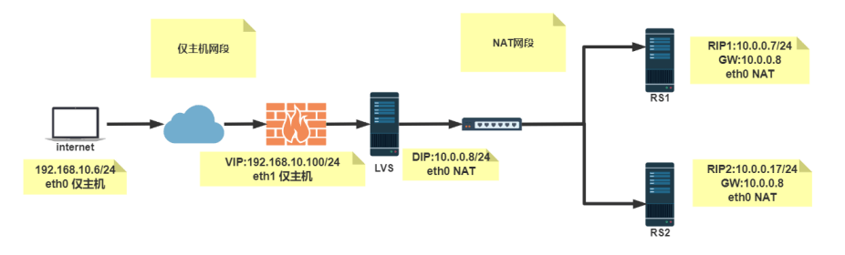
环境：
1 2 3 4 5 6 7 8 9 10 共四台主机 一台： internet client：192.168.10.6/24 GW:无 仅主机 一台：lvs eth1 仅主机 192.168.10.100/16 eth0 NAT 10.0.0.8/24 两台RS： RS1: 10.0.0.7/24 GW：10.0.0.8 NAT RS2: 10.0.0.17/24 GW：10.0.0.8 NAT
配置过程：
1 2 3 4 5 6 7 8 9 10 11 12 13 14 15 16 17 18 19 20 21 22 23 24 25 26 27 28 29 30 31 32 33 34 35 36 37 38 39 40 41 42 43 44 45 46 47 48 49 50 51 52 53 54 55 56 57 58 59 60 61 62 63 64 65 66 67 68 69 70 71 72 73 74 75 76 77 78 79 80 81 82 83 84 85 86 87 88 89 90 91 92 93 94 95 96 97 98 99 100 101 102 103 104 105 106 107 108 109 110 111 112 113 114 115 116 117 118 119 120 121 122 123 124 125 126 127 128 129 130 [root@internet ~] DEVICE=eth0 NAME=eth0 BOOTPROTO=static IPADDR=192.168.10.6 PREFIX=24 ONBOOT=yes [root@lvs network-scripts] DEVICE=eth0 NAME=eth0 BOOTPROTO=static IPADDR=10.0.0.8 PREFIX=24 ONBOOT=yes [root@lvs network-scripts] DEVICE=eth1 NAME=eth1 BOOTPROTO=static IPADDR=192.168.10.100 PREFIX=24 ONBOOT=yes [root@rs1 ~] DEVICE=eth0 NAME=eth0 BOOTPROTO=static IPADDR=10.0.0.7 PREFIX=24 GATEWAY=10.0.0.8 ONBOOT=yes [root@rs2 ~] DEVICE=eth0 NAME=eth0 BOOTPROTO=static IPADDR=10.0.0.17 PREFIX=24 GATEWAY=10.0.0.8 ONBOOT=yes [root@rs1 ~] 10.0.0.7 RS1 [root@rs2 ~] 10.0.0.17 RS2 [root@lvs-server ~] net.ipv4.ip_forward = 1 [root@lvs-server ~] net.ipv4.ip_forward = 1 [root@lvs-server ~] [root@lvs-server ~] [root@lvs-server ~] [root@lvs-server ~] IP Virtual Server version 1.2.1 (size=4096) Prot LocalAddress:Port Scheduler Flags -> RemoteAddress:Port Forward Weight ActiveConn InActConn TCP 192.168.10.100:80 wrr -> 10.0.0.7:80 Masq 1 1 0 -> 10.0.0.17:80 Masq 1 0 0 [root@internet ~] rs1.wang.org rs2.wang.org rs1.wang.org rs2.wang.org rs1.wang.org rs2.wang.org [root@lvs-server ~] IP Virtual Server version 1.2.1 (size=4096) Prot LocalAddress:Port Conns InPkts OutPkts InBytes OutBytes -> RemoteAddress:Port TCP 192.168.10.100:80 67 405 255 32436 30092 -> 10.0.0.7:80 34 203 128 16244 15072 -> 10.0.0.17:80 33 202 127 16192 15020 [root@lvs-server ~] IP Virtual Server version 1.2.1 (size=4096) Prot LocalAddress:Port Scheduler Flags -> RemoteAddress:Port Forward Weight ActiveConn InActConn TCP C0A80A64:0050 wrr -> 0A000011:0050 Masq 1 0 98 -> 0A000007:0050 Masq 1 0 97 [root@lvs-server ~] IPVS connection entries pro expire state source virtual destination TCP 01:55 TIME_WAIT 192.168.10.6:43486 192.168.10.100:80 10.0.0.17:80 TCP 00:19 TIME_WAIT 192.168.10.6:43476 192.168.10.100:80 10.0.0.7:80 TCP 01:58 TIME_WAIT 192.168.10.6:43500 192.168.10.100:80 10.0.0.7:80 TCP 01:58 TIME_WAIT 192.168.10.6:43498 192.168.10.100:80 10.0.0.17:80 TCP 01:59 TIME_WAIT 192.168.10.6:43502 192.168.10.100:80 10.0.0.17:80 TCP 01:57 TIME_WAIT 192.168.10.6:43494 192.168.10.100:80 10.0.0.17:80 TCP 01:57 TIME_WAIT 192.168.10.6:43496 192.168.10.100:80 10.0.0.7:80 TCP 01:56 TIME_WAIT 192.168.10.6:43490 192.168.10.100:80 10.0.0.17:80 TCP 00:20 TIME_WAIT 192.168.10.6:43480 192.168.10.100:80 10.0.0.7:80 TCP 01:56 TIME_WAIT 192.168.10.6:43492 192.168.10.100:80 10.0.0.7:80 TCP 01:55 TIME_WAIT 192.168.10.6:43488 192.168.10.100:80 10.0.0.7:80 TCP 00:20 TIME_WAIT 192.168.10.6:43478 192.168.10.100:80 10.0.0.17:80 TCP 01:59 TIME_WAIT 192.168.10.6:43504 192.168.10.100:80 10.0.0.7:80 TCP 01:54 TIME_WAIT 192.168.10.6:43484 192.168.10.100:80 10.0.0.7:80 TCP 01:54 TIME_WAIT 192.168.10.6:43482 192.168.10.100:80 10.0.0.17:80 [root@lvs-server ~] Pro FromIP FPrt ToIP TPrt DestIP DPrt State Expires PEName PEData TCP C0A80A06 A9DE C0A80A64 0050 0A000011 0050 TIME_WAIT 72 TCP C0A80A06 A9EC C0A80A64 0050 0A000007 0050 TIME_WAIT 76 TCP C0A80A06 AA64 C0A80A64 0050 0A000007 0050 TIME_WAIT 106 TCP C0A80A06 AA0C C0A80A64 0050 0A000007 0050 TIME_WAIT 84 TCP C0A80A06 AA3A C0A80A64 0050 0A000011 0050 TIME_WAIT 95 TCP C0A80A06 AA86 C0A80A64 0050 0A000011 0050 TIME_WAIT 115 TCP C0A80A06 AA78 C0A80A64 0050 0A000007 0050 TIME_WAIT 111 TCP C0A80A06 AA06 C0A80A64 0050 0A000011 0050 TIME_WAIT 82 TCP C0A80A06 AA44 C0A80A64 0050 0A000007 0050 TIME_WAIT 98 TCP C0A80A06 AA2C C0A80A64 0050 0A000007 0050 TIME_WAIT 92 [root@lvs-server ~] [root@lvs-server ~]
范例2：
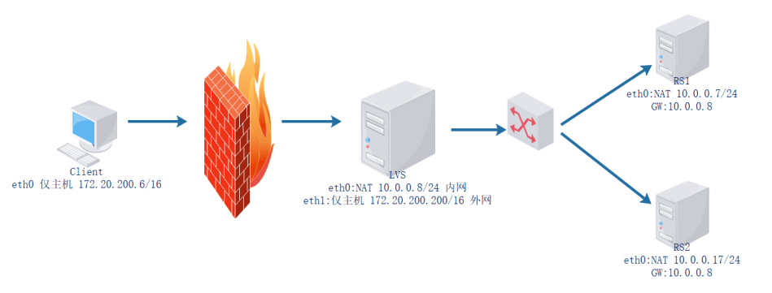
Director 服务器采用双网卡，一个是桥接网卡连接外网，一个是仅主机网卡与后端Web服务器相连
Web服务器采用仅主机网卡与director相连
Web服务器网关指向10.0.0.200
后端web服务器不需要连接外网
环境：
1 2 3 4 5 6 7 8 9 10 共四台主机 一台： internet client ：172.20.200.6/16 GW:无 一台：lvs eth1 桥接 172.20.200.200/16 eth0 NAT 10.0.0.200/24 两台RS： RS1: 10.0.0.7/24 GW： 10.0.0.200 RS2: 10.0.0.17/24 GW： 10.0.0.200
配置过程
1 2 3 4 5 6 7 8 9 10 11 12 13 14 15 16 17 18 19 20 21 22 23 24 25 26 27 28 29 30 31 32 33 34 35 36 37 38 39 40 41 42 43 44 45 46 47 48 49 50 51 52 53 54 55 56 57 58 59 60 61 62 63 64 65 66 67 68 69 70 71 72 73 74 75 76 77 78 79 80 81 82 83 84 85 86 87 88 89 90 91 92 93 94 95 96 97 98 99 100 101 102 103 104 105 106 107 108 109 110 111 112 113 114 115 116 117 118 119 120 121 122 123 124 125 126 127 [root@lvs ~] net.ipv4.ip_forward = 1 [root@lvs ~] [root@lvs ~] [root@lvs ~] [root@lvs ~] [root@LVS ~] IP Virtual Server version 1.2.1 (size=4096) Prot LocalAddress:Port Scheduler Flags -> RemoteAddress:Port Forward Weight ActiveConn InActConn TCP 172.20.200.200:80 rr -> 10.0.0.7:80 Masq 1 0 0 -> 10.0.0.17:80 Masq 1 0 0 [root@client ~] RS2 Server on 10.0.0.17 [root@client ~] RS1 Server on 10.0.0.7 [root@client ~] RS2 Server on 10.0.0.17 [root@client ~] RS1 Server on 10.0.0.7 [root@LVS ~] Pro FromIP FPrt ToIP TPrt DestIP DPrt State Expires PEName PEData TCP AC14C806 BD6A AC14C8C8 0050 0A000011 0050 TIME_WAIT 97 TCP AC14C806 BD6C AC14C8C8 0050 0A000007 0050 TIME_WAIT 97 TCP AC14C806 BD66 AC14C8C8 0050 0A000011 0050 TIME_WAIT 90 TCP AC14C806 BD68 AC14C8C8 0050 0A000007 0050 TIME_WAIT 92 [root@LVS ~] [root@LVS ~] -A -t 172.20.200.200:80 -s rr -a -t 172.20.200.200:80 -r 10.0.0.7:80 -m -w 1 -a -t 172.20.200.200:80 -r 10.0.0.17:80 -m -w 1 [root@LVS ~] [root@LVS ~] IP Virtual Server version 1.2.1 (size=4096) Prot LocalAddress:Port Scheduler Flags -> RemoteAddress:Port Forward Weight ActiveConn InActConn [root@LVS ~] [root@LVS ~] IP Virtual Server version 1.2.1 (size=4096) Prot LocalAddress:Port Scheduler Flags -> RemoteAddress:Port Forward Weight ActiveConn InActConn TCP 172.20.200.200:80 rr -> 10.0.0.7:80 Masq 1 0 0 -> 10.0.0.17:80 [root@LVS ~] [root@LVS ~] IP Virtual Server version 1.2.1 (size=4096) Prot LocalAddress:Port Scheduler Flags -> RemoteAddress:Port Forward Weight ActiveConn InActConn [root@LVS ~] [root@LVS ~] IP Virtual Server version 1.2.1 (size=4096) Prot LocalAddress:Port Scheduler Flags -> RemoteAddress:Port Forward Weight ActiveConn InActConn TCP 172.20.200.200:80 rr -> 10.0.0.7:80 Masq 1 0 0 -> 10.0.0.17:80 Masq 1 0 0 [root@rs1 ~] 172.20.200.6 - - [24/Mar/2020:16:38:29 +0800] "GET / HTTP/1.1" 200 23 "-" "curl/7.19.7 (x86_64-redhat-linux-gnu) libcurl/7.19.7 NSS/3.27.1 zlib/1.2.3 libidn/1.18 libssh2/1.4.2" 172.20.200.6 - - [24/Mar/2020:16:38:35 +0800] "GET / HTTP/1.1" 200 23 "-" "curl/7.19.7 (x86_64-redhat-linux-gnu) libcurl/7.19.7 NSS/3.27.1 zlib/1.2.3 libidn/1.18 libssh2/1.4.2" 172.20.200.6 - - [24/Mar/2020:16:52:16 +0800] "GET / HTTP/1.1" 200 23 "-" "curl/7.19.7 (x86_64-redhat-linux-gnu) libcurl/7.19.7 NSS/3.27.1 zlib/1.2.3 libidn/1.18 libssh2/1.4.2" 172.20.200.6 - - [24/Mar/2020:16:52:17 +0800] "GET / HTTP/1.1" 200 23 "-" "curl/7.19.7 (x86_64-redhat-linux-gnu) libcurl/7.19.7 NSS/3.27.1 zlib/1.2.3 libidn/1.18 libssh2/1.4.2" 172.20.200.6 - - [24/Mar/2020:16:53:36 +0800] "GET / HTTP/1.1" 200 23 "-" "curl/7.19.7 (x86_64-redhat-linux-gnu) libcurl/7.19.7 NSS/3.27.1 zlib/1.2.3 libidn/1.18 libssh2/1.4.2" 172.20.200.6 - - [24/Mar/2020:16:53:37 +0800] "GET / HTTP/1.1" 200 23 "-" "curl/7.19.7 (x86_64-redhat-linux-gnu) libcurl/7.19.7 NSS/3.27.1 zlib/1.2.3 libidn/1.18 libssh2/1.4.2" [root@LVS ~] [root@LVS ~] [root@LVS ~] [root@LVS ~] IP Virtual Server version 1.2.1 (size=4096) Prot LocalAddress:Port Scheduler Flags -> RemoteAddress:Port Forward Weight ActiveConn InActConn TCP 172.20.200.200:80 wrr -> 10.0.0.7:8080 Masq 3 0 0 -> 10.0.0.17:80 Masq 1 0 1 [root@rs1 ~] Listen 8080 [root@rs1 ~] [root@client ~] RS1 Server on 10.0.0.7 [root@client ~] RS1 Server on 10.0.0.7 [root@client ~] RS1 Server on 10.0.0.7 [root@client ~] RS2 Server on 10.0.0.17
LVS-DR模式单网段案例 DR模型中各主机上均需要配置VIP，解决地址冲突的方式有三种：
(1) 在前端网关做静态绑定
(2) 在各RS使用arptables
(3) 在各RS修改内核参数，来限制arp响应和通告的级别
限制响应级别：arp_ignore
0：默认值，表示可使用本地任意接口上配置的任意地址进行响应
1：仅在请求的目标IP配置在本地主机的接收到请求报文的接口上时，才给予响应
限制通告级别：arp_announce
范例:
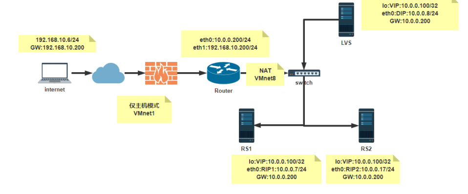
1 2 3 4 5 6 7 8 9 10 11 12 13 14 环境：五台主机 一台：客户端 eth0:仅主机 192.168.10.6/24 GW:192.168.10.200 一台：ROUTER eth0 :NAT 10.0.0.200/24 eth1: 仅主机 192.168.10.200/24 启用 IP_FORWARD 一台：LVS eth0:NAT:DIP:10.0.0.8/24 GW:10.0.0.200 两台RS： RS1：eth0:NAT:10.0.0.7/24 GW：10.0.0.200 RS2：eth0:NAT:10.0.0.17/24 GW：10.0.0.200
LVS的网络配置 1 2 3 4 5 6 7 8 9 10 11 12 13 14 15 16 17 18 19 20 21 22 23 24 25 26 27 28 29 30 31 32 33 34 35 36 37 38 39 40 41 42 43 44 45 46 47 48 49 50 51 52 53 54 55 56 57 58 59 60 61 62 63 64 65 66 67 68 69 70 71 72 73 74 75 76 77 78 79 80 81 82 83 84 85 86 87 88 89 90 91 92 93 94 95 96 97 98 99 100 101 102 103 104 105 106 107 108 109 110 111 112 113 114 115 116 117 118 119 120 121 122 123 124 125 126 127 128 129 130 131 132 133 134 135 136 [root@internet ~] internet [root@internet ~] 192.168.10.6 [root@internet ~] Kernel IP routing table Destination Gateway Genmask Flags Metric Ref Use Iface 192.168.10.0 0.0.0.0 255.255.255.0 U 1 0 0 eth0 0.0.0.0 192.168.10.200 0.0.0.0 UG 0 0 0 eth0 [root@internet ~] PING 10.0.0.7 (10.0.0.7) 56(84) bytes of data. 64 bytes from 10.0.0.7: icmp_seq=1 ttl=63 time=0.565 ms [root@internet ~] PING 10.0.0.7 (10.0.0.17) 56(84) bytes of data. 64 bytes from 10.0.0.17: icmp_seq=1 ttl=63 time=0.565 ms [root@router ~] [root@router ~] [root@router network-scripts] /etc/sysconfig/network-scripts [root@router network-scripts] DEVICE=eth0 NAME=eth0 BOOTPROTO=static IPADDR=10.0.0.200 PREFIX=24 ONBOOT=yes [root@router network-scripts] DEVICE=eth1 NAME=eth1 BOOTPROTO=static IPADDR=192.168.10.200 PREFIX=24 ONBOOT=yes [root@rs1 ~] rs1.wang.org [root@rs1 ~] 10.0.0.7 [root@rs1 ~] DEVICE=eth0 NAME=eth0 BOOTPROTO=static IPADDR=10.0.0.7 PREFIX=24 GATEWAY=10.0.0.200 ONBOOT=yes [root@rs1 ~] Kernel IP routing table Destination Gateway Genmask Flags Metric Ref Use Iface 0.0.0.0 10.0.0.200 0.0.0.0 UG 100 0 0 eth0 10.0.0.0 0.0.0.0 255.255.255.0 U 100 0 0 eth0 [root@rs1 ~] [root@rs1 ~] [root@rs1 ~] [root@rs1 ~] PING 192.168.10.6 (192.168.10.6) 56(84) bytes of data. 64 bytes from 192.168.10.6: icmp_seq=1 ttl=63 time=1.14 ms [root@rs1 ~] 10.0.0.7 [root@rs2 ~] DEVICE=eth0 NAME=eth0 BOOTPROTO=static IPADDR=10.0.0.17 PREFIX=24 GATEWAY=10.0.0.200 ONBOOT=yes [root@rs2 ~] Kernel IP routing table Destination Gateway Genmask Flags Metric Ref Use Iface 0.0.0.0 10.0.0.200 0.0.0.0 UG 100 0 0 eth0 10.0.0.0 0.0.0.0 255.255.255.0 U 100 0 0 eth0 [root@rs2 ~] [root@rs2 ~] [root@rs2 ~] [root@rs2 ~] 10.0.0.17 [root@rs1 ~] PING 192.168.10.6 (192.168.10.6) 56(84) bytes of data. 64 bytes from 192.168.10.6: icmp_seq=1 ttl=63 time=1.14 ms [root@rs2 ~] 10.0.0.17 [root@lvs ~] lvs.wang.org [root@lvs ~] 10.0.0.8 [root@lvs ~] DEVICE=eth0 NAME=eth0 BOOTPROTO=static IPADDR=10.0.0.8 PREFIX=24 GATEWAY=10.0.0.200 ONBOOT=yes [root@lvs ~] Kernel IP routing table Destination Gateway Genmask Flags Metric Ref Use Iface 0.0.0.0 10.0.0.200 0.0.0.0 UG 100 0 0 eth0 10.0.0.0 0.0.0.0 255.255.255.0 U 100 0 0 eth0 [root@lvs ~] PING 192.168.10.6 (192.168.10.6) 56(84) bytes of data. 64 bytes from 192.168.10.6: icmp_seq=1 ttl=63 time=2.32 ms
后端RS的IPVS配置 1 2 3 4 5 6 7 8 9 10 11 12 13 14 15 16 17 18 19 20 21 22 23 24 25 26 27 28 29 30 31 32 33 34 35 36 37 38 39 40 41 42 43 44 45 46 47 [root@rs1 ~] [root@rs1 ~] [root@rs1 ~] [root@rs1 ~] [root@rs1 ~] [root@rs1 ~] 1: lo: <LOOPBACK,UP,LOWER_UP> mtu 65536 qdisc noqueue state UNKNOWN group default qlen 1000 link /loopback 00:00:00:00:00:00 brd 00:00:00:00:00:00 inet 127.0.0.1/8 scope host lo valid_lft forever preferred_lft forever inet 10.0.0.100/0 scope global lo:1 valid_lft forever preferred_lft forever inet6 ::1/128 scope host valid_lft forever preferred_lft forever 2: eth0: <BROADCAST,MULTICAST,UP,LOWER_UP> mtu 1500 qdisc pfifo_fast state UP group default qlen 1000 link /ether 00:0c:29:01:f9:48 brd ff:ff:ff:ff:ff:ff inet 10.0.0.7/24 brd 10.0.0.255 scope global noprefixroute eth0 valid_lft forever preferred_lft forever inet6 fe80::20c:29ff:fe01:f948/64 scope link valid_lft forever preferred_lft forever [root@rs2 ~] [root@rs2 ~] [root@rs2 ~] [root@rs2 ~] [root@rs2 ~] [root@rs2 ~] 1: lo: <LOOPBACK,UP,LOWER_UP> mtu 65536 qdisc noqueue state UNKNOWN group default qlen 1000 link /loopback 00:00:00:00:00:00 brd 00:00:00:00:00:00 inet 127.0.0.1/8 scope host lo valid_lft forever preferred_lft forever inet 10.0.0.100/0 scope global lo:1 valid_lft forever preferred_lft forever inet6 ::1/128 scope host valid_lft forever preferred_lft forever 2: eth0: <BROADCAST,MULTICAST,UP,LOWER_UP> mtu 1500 qdisc pfifo_fast state UP group default qlen 1000 link /ether 00:0c:29:94:1a:f6 brd ff:ff:ff:ff:ff:ff inet 10.0.0.17/24 brd 10.0.0.255 scope global noprefixroute eth0 valid_lft forever preferred_lft forever inet6 fe80::20c:29ff:fe94:1af6/64 scope link valid_lft forever preferred_lft forever
LVS主机的配置 1 2 3 4 5 6 7 8 9 10 11 12 13 14 15 16 17 18 19 20 21 22 23 24 25 26 27 28 29 30 31 [root@lvs ~] [root@lvs ~] 1: lo: <LOOPBACK,UP,LOWER_UP> mtu 65536 qdisc noqueue state UNKNOWN group default qlen 1000 link /loopback 00:00:00:00:00:00 brd 00:00:00:00:00:00 inet 127.0.0.1/8 scope host lo valid_lft forever preferred_lft forever inet 10.0.0.100/0 scope global lo:1 valid_lft forever preferred_lft forever inet6 ::1/128 scope host valid_lft forever preferred_lft forever 2: eth0: <BROADCAST,MULTICAST,UP,LOWER_UP> mtu 1500 qdisc fq_codel state UP group default qlen 1000 link /ether 00:0c:29:8a:51:21 brd ff:ff:ff:ff:ff:ff inet 10.0.0.8/24 brd 10.0.0.255 scope global noprefixroute eth0 valid_lft forever preferred_lft forever [root@lvs ~] [root@lvs ~] [root@lvs ~] [root@lvs ~] [root@lvs ~] IP Virtual Server version 1.2.1 (size=4096) Prot LocalAddress:Port Scheduler Flags -> RemoteAddress:Port Forward Weight ActiveConn InActConn TCP 10.0.0.100:80 rr -> 10.0.0.7:80 Route 1 0 0 -> 10.0.0.17:80 Route 1 0 0
测试访问 1 2 3 4 5 6 7 8 9 10 [root@internet ~] 10.0.0.17 [root@internet ~] 10.0.0.7 [root@rs1 ~] 192.168.10.6 - - [12/Jul/2020:10:36:21 +0800] "GET / HTTP/1.1" 200 10 "-" "curl/7.19.7 (x86_64-redhat-linux-gnu) libcurl/7.19.7 NSS/3.27.1 zlib/1.2.3 libidn/1.18 libssh2/1.4.2"
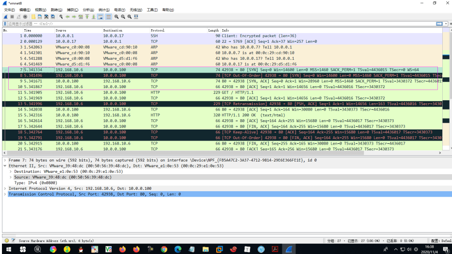
思考 LVS的eth0的网关可否不配置？如果随便配置，发现什么问题？如果不配 置，怎么解决？ 1 2 3 4 5 6 7 8 9 10 11 [root@centos8 ~] 1 [root@lvs ~]
LVS的VIP可以配置到lo网卡,但必须使用32位的netmask,为什么? 范例：
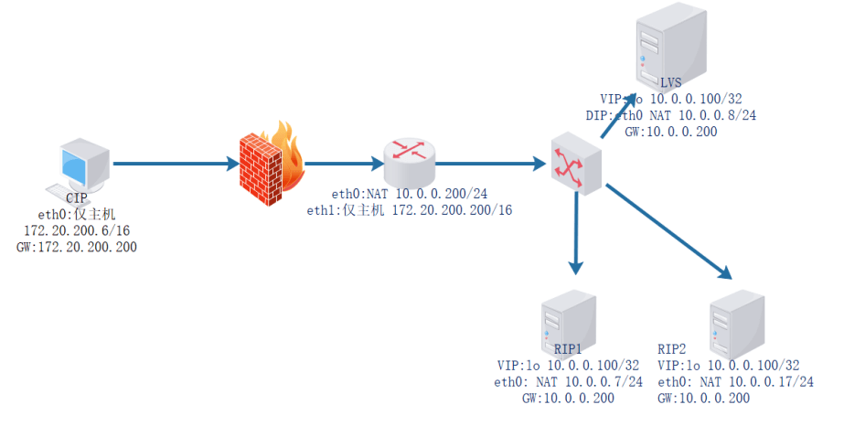
1 2 3 4 5 6 7 8 9 10 11 12 13 14 环境：五台主机 一台：客户端 172.20.200.6/16 GW:172.20.200.200 一台：ROUTER eth0 :NAT 10.0.0.200/24 VIP eth1: 桥接 172.20.200.200/16 启用 IP_FORWARD 一台：LVS eth0: 10.0.0.8/24 GW:10.0.0.200 两台RS： RS1：10.0.0.7/24 GW：10.0.0.200 RS2：10.0.0.17/24 GW：10.0.0.200
配置：
1 2 3 4 5 6 7 8 9 10 11 12 13 14 15 16 17 18 19 20 21 22 23 24 25 26 27 28 29 30 31 32 33 34 35 36 37 38 39 40 41 42 43 44 45 46 47 48 49 50 51 52 53 54 55 56 57 58 59 60 61 62 63 64 65 66 67 68 69 70 71 72 73 74 75 76 77 78 79 80 81 82 83 84 85 86 87 88 89 90 91 92 93 [root@client ~] DEVICE=eth0 NAME=eth0 BOOTPROTO=static IPADDR=172.20.200.6 PREFIX=16 GATEWAY=172.20.200.200 ONBOOT=yes [root@Router ~] DEVICE=eth0 NAME=eth0 BOOTPROTO=static IPADDR=10.0.0.200 PREFIX=24 ONBOOT=yes [root@Router ~] DEVICE=eth1 NAME=eth1 BOOTPROTO=static IPADDR=172.20.200.200 PREFIX=16 ONBOOT=yes [root@Router ~] net.ipv4.ip_forward=1 [root@Router ~] [root@rs1 ~] DEVICE=eth0 NAME=eth0 BOOTPROTO=static IPADDR=10.0.0.7 PREFIX=24 GATEWAY=10.0.0.200 ONBOOT=yes [root@rs1 ~] [root@rs1 ~] [root@rs1 ~] [root@rs1 ~] [root@rs1 ~] [root@rs1 ~] 1: lo: <LOOPBACK,UP,LOWER_UP> mtu 65536 qdisc noqueue state UNKNOWN group default qlen 1000 link /loopback 00:00:00:00:00:00 brd 00:00:00:00:00:00 inet 127.0.0.1/8 scope host lo valid_lft forever preferred_lft forever inet 10.0.0.100/0 scope global lo:1 valid_lft forever preferred_lft forever inet6 ::1/128 scope host valid_lft forever preferred_lft forever 2: eth0: <BROADCAST,MULTICAST,UP,LOWER_UP> mtu 1500 qdisc pfifo_fast state UP group default qlen 1000 link /ether 00:0c:29:32:80:38 brd ff:ff:ff:ff:ff:ff inet 10.0.0.7/24 brd 10.0.0.255 scope global noprefixroute eth0 valid_lft forever preferred_lft forever inet6 fe80::20c:29ff:fe32:8038/64 scope link valid_lft forever preferred_lft forever [root@rs2 ~] DEVICE=eth0 NAME=eth0 BOOTPROTO=static IPADDR=10.0.0.17 PREFIX=24 GATEWAY=10.0.0.200 ONBOOT=yes [root@rs2 ~] [root@rs2 ~] [root@rs2 ~] [root@rs2 ~] [root@rs2 ~] [root@LVS ~] DEVICE=eth0 NAME=eth0 BOOTPROTO=static IPADDR=10.0.0.8 PREFIX=24 GATEWAY=10.0.0.200 ONBOOT=yes [root@LVS ~] [root@LVS ~] [root@LVS ~] [root@LVS ~] [root@lvs ~] [root@lvs ~]
LVS-DR模式多网段案例 单网段的DR模式容易暴露后端RS服务器地址信息,可以使用跨网面的DR模型,实现更高的安全性
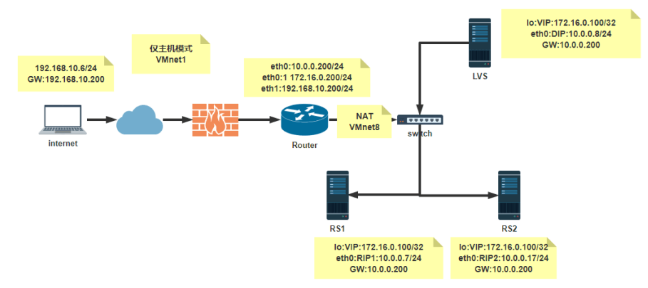
范例:
1 2 3 4 5 6 7 8 9 10 11 12 13 14 15 16 17 18 19 20 21 22 23 24 25 26 27 28 29 30 31 32 33 34 35 36 37 38 39 40 41 42 43 44 45 46 47 48 49 50 51 52 53 54 55 56 57 58 59 60 61 62 63 64 65 66 67 68 69 70 71 72 73 74 75 76 77 78 79 80 81 82 83 84 85 86 87 88 89 90 91 92 93 94 95 96 97 98 99 100 101 102 103 104 105 106 107 108 109 110 111 112 113 114 115 116 117 118 119 120 121 122 123 124 125 126 127 128 129 130 131 132 133 134 135 136 137 138 139 140 141 142 143 144 145 146 147 148 149 150 151 152 153 [root@internet ~] 192.168.10.6 [root@router ~] [root@router ~] 1: lo: <LOOPBACK,UP,LOWER_UP> mtu 65536 qdisc noqueue state UNKNOWN group default qlen 1000 link /loopback 00:00:00:00:00:00 brd 00:00:00:00:00:00 inet 127.0.0.1/8 scope host lo valid_lft forever preferred_lft forever inet6 ::1/128 scope host valid_lft forever preferred_lft forever 2: eth0: <BROADCAST,MULTICAST,UP,LOWER_UP> mtu 1500 qdisc fq_codel state UP group default qlen 1000 link /ether 00:0c:29:ab:8f:2b brd ff:ff:ff:ff:ff:ff inet 10.0.0.200/24 brd 10.0.0.255 scope global noprefixroute eth0 valid_lft forever preferred_lft forever inet 172.16.0.200/24 brd 172.16.0.255 scope global noprefixroute eth0 valid_lft forever preferred_lft forever inet6 fe80::20c:29ff:feab:8f2b/64 scope link tentative valid_lft forever preferred_lft forever 3: eth1: <BROADCAST,MULTICAST,UP,LOWER_UP> mtu 1500 qdisc fq_codel state UP group default qlen 1000 link /ether 00:0c:29:ab:8f:35 brd ff:ff:ff:ff:ff:ff inet 192.168.10200/24 brd 192.168.10255 scope global noprefixroute eth1 valid_lft forever preferred_lft forever inet6 fe80::20c:29ff:feab:8f35/64 scope link valid_lft forever preferred_lft forever [root@router ~] 10.0.0.200 172.16.0.200 192.168.10200 [root@lvs ~] 10.0.0.8 [root@lvs ~] Kernel IP routing table Destination Gateway Genmask Flags Metric Ref Use Iface 0.0.0.0 10.0.0.200 0.0.0.0 UG 0 0 0 eth0 10.0.0.0 0.0.0.0 255.255.255.0 U 100 0 0 eth0 [root@rs1 ~] 10.0.0.7 [root@rs1 ~] Kernel IP routing table Destination Gateway Genmask Flags Metric Ref Use Iface 0.0.0.0 10.0.0.200 0.0.0.0 UG 100 0 0 eth0 10.0.0.0 0.0.0.0 255.255.255.0 U 100 0 0 eth0 [root@rs2 ~] 10.0.0.17 [root@rs2 ~] Kernel IP routing table Destination Gateway Genmask Flags Metric Ref Use Iface 0.0.0.0 10.0.0.200 0.0.0.0 UG 100 0 0 eth0 10.0.0.0 0.0.0.0 255.255.255.0 U 100 0 0 eth0 [root@lvs ~] vip='172.16.0.100' iface='lo:1' mask='255.255.255.255' port='80' rs1='10.0.0.7' rs2='10.0.0.17' scheduler='wrr' type ='-g' rpm -q ipvsadm &> /dev/null || yum -y install ipvsadm &> /dev/null case $1 in start) ifconfig $iface $vip netmask $mask iptables -F ipvsadm -A -t ${vip} :${port} -s $scheduler ipvsadm -a -t ${vip} :${port} -r ${rs1} $type -w 1 ipvsadm -a -t ${vip} :${port} -r ${rs2} $type -w 1 echo "The VS Server is Ready!" ;; stop) ipvsadm -C ifconfig $iface down echo "The VS Server is Canceled!" ;; *) echo "Usage: $(basename $0) start|stop" exit 1 ;; esac [root@lvs ~] The VS Server is Ready! [root@rs1 ~] vip=172.16.0.100 mask='255.255.255.255' dev=lo:1 rpm -q httpd &> /dev/null || yum -y install httpd &>/dev/null service httpd start &> /dev/null && echo "The httpd Server is Ready!" echo "`hostname -I`" > /var/www/html/index.htmlcase $1 in start) echo 1 > /proc/sys/net/ipv4/conf/all/arp_ignore echo 1 > /proc/sys/net/ipv4/conf/lo/arp_ignore echo 2 > /proc/sys/net/ipv4/conf/all/arp_announce echo 2 > /proc/sys/net/ipv4/conf/lo/arp_announce ifconfig $dev $vip netmask $mask echo "The RS Server is Ready!" ;; stop) ifconfig $dev down echo 0 > /proc/sys/net/ipv4/conf/all/arp_ignore echo 0 > /proc/sys/net/ipv4/conf/lo/arp_ignore echo 0 > /proc/sys/net/ipv4/conf/all/arp_announce echo 0 > /proc/sys/net/ipv4/conf/lo/arp_announce echo "The RS Server is Canceled!" ;; *) echo "Usage: $(basename $0) start|stop" exit 1 ;; esac [root@rs1 ~] The RS Server is Ready! [root@rs2 ~] The RS Server is Ready! [root@internet ~] 10.0.0.7 [root@internet ~] 10.0.0.17
范例2
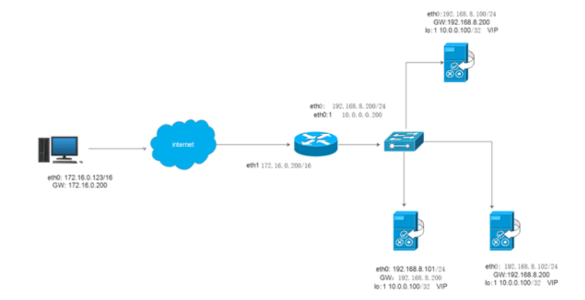
RS 的配置脚本
1 2 3 4 5 6 7 8 9 10 11 12 13 14 15 16 17 18 19 20 21 22 23 24 25 26 #!/bin/bash vip=10.0.0.100 mask='255.255.255.255' dev=lo:1 case $1 in start) echo 1 > /proc/sys/net/ipv4/conf/all/arp_ignore echo 1 > /proc/sys/net/ipv4/conf/lo/arp_ignore echo 2 > /proc/sys/net/ipv4/conf/all/arp_announce echo 2 > /proc/sys/net/ipv4/conf/lo/arp_announce ifconfig $dev $vip netmask $You can't use ' macro parameter character math modemask ;; stop) ifconfig $dev down echo 0 > /proc/sys/net/ipv4/conf/all/arp_ignore echo 0 > /proc/sys/net/ipv4/conf/lo/arp_ignore echo 0 > /proc/sys/net/ipv4/conf/all/arp_announce echo 0 > /proc/sys/net/ipv4/conf/lo/arp_announce ;; *) echo "Usage: $(basename $0) start|stop" exit 1 ;; esac
VS的配置脚本
1 2 3 4 5 6 7 8 9 10 11 12 13 14 15 16 17 18 19 20 21 22 23 24 25 #!/bin/bash vip='10.0.0.100' iface='lo:1' mask='255.255.255.255' port='80' rs1='192.168.8.101' rs2='192.168.8.102' scheduler='wrr' type ='-g' case $1 in start) ifconfig $iface $vip netmask $mask iptables -F ipvsadm -A -t ${vip} :${port} -s $scheduler ipvsadm -a -t ${vip} :${port} -r ${rs1} $type -w 1 ipvsadm -a -t ${vip} :${port} -r ${rs2} $type -w 1 ;; stop) ipvsadm -C ifconfig $iface down ;; *) echo "Usage $(basename $0) start|stop“ exit 1 esac
范例3: 跨网段DR模型案例
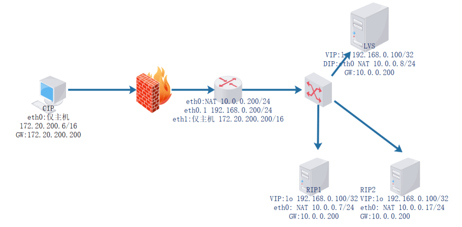
配置
1 2 3 4 5 6 7 8 9 10 11 12 13 14 15 16 17 18 19 20 21 22 23 24 25 26 27 28 29 30 31 32 33 34 35 36 37 38 39 40 41 42 43 44 45 46 47 48 49 50 51 52 53 54 55 56 57 58 59 60 61 62 63 64 65 66 67 68 69 70 71 72 73 74 75 76 77 78 79 80 81 82 83 84 85 86 87 88 89 90 91 92 93 94 95 96 97 98 [root@rs1 ~] vip=192.168.10100 mask='255.255.255.255' dev=lo:1 case $1 in start) echo 1 > /proc/sys/net/ipv4/conf/all/arp_ignore echo 1 > /proc/sys/net/ipv4/conf/lo/arp_ignore echo 2 > /proc/sys/net/ipv4/conf/all/arp_announce echo 2 > /proc/sys/net/ipv4/conf/lo/arp_announce ifconfig $dev $vip netmask $mask echo "The RS Server is Ready!" ;; stop) ifconfig $dev down echo 0 > /proc/sys/net/ipv4/conf/all/arp_ignore echo 0 > /proc/sys/net/ipv4/conf/lo/arp_ignore echo 0 > /proc/sys/net/ipv4/conf/all/arp_announce echo 0 > /proc/sys/net/ipv4/conf/lo/arp_announce echo "The RS Server is Canceled!" ;; *) echo "Usage: $(basename $0) start|stop" exit 1 ;; esac [root@rs1 ~] [root@rs2 ~] [root@LVS ~] vip='192.168.10100' iface='lo:1' mask='255.255.255.255' port='80' rs1='10.0.0.7' rs2='10.0.0.17' scheduler='wrr' type ='-g' rpm -q ipvsadm &> /dev/null || yum -y install ipvsadm &> /dev/null case $1 in start) ifconfig $iface $vip netmask $mask iptables -F ipvsadm -A -t ${vip} :${port} -s $scheduler ipvsadm -a -t ${vip} :${port} -r ${rs1} $type -w 1 ipvsadm -a -t ${vip} :${port} -r ${rs2} $type -w 1 echo "The VS Server is Ready!" ;; stop) ipvsadm -C ifconfig $iface down echo "The VS Server is Canceled!" ;; *) echo "Usage: $(basename $0) start|stop" exit 1 ;; esac [root@LVS ~] [root@Router ~] [root@Router ~] [root@Router ~] [root@Router ~] 1: lo: <LOOPBACK,UP,LOWER_UP> mtu 65536 qdisc noqueue state UNKNOWN group default qlen 1000 link /loopback 00:00:00:00:00:00 brd 00:00:00:00:00:00 inet 127.0.0.1/8 scope host lo valid_lft forever preferred_lft forever inet6 ::1/128 scope host valid_lft forever preferred_lft forever 2: eth0: <BROADCAST,MULTICAST,UP,LOWER_UP> mtu 1500 qdisc fq_codel state UP group default qlen 1000 link /ether 00:0c:29:4d:ef:3e brd ff:ff:ff:ff:ff:ff inet 10.0.0.200/24 brd 10.0.0.255 scope global noprefixroute eth0 valid_lft forever preferred_lft forever inet 192.168.10200/24 brd 192.168.10255 scope global noprefixroute eth0 valid_lft forever preferred_lft forever inet6 fe80::20c:29ff:fe4d:ef3e/64 scope link valid_lft forever preferred_lft forever 3: eth1: <BROADCAST,MULTICAST,UP,LOWER_UP> mtu 1500 qdisc fq_codel state UP group default qlen 1000 link /ether 00:0c:29:4d:ef:48 brd ff:ff:ff:ff:ff:ff inet 172.20.200.200/16 brd 172.20.255.255 scope global noprefixroute eth1 valid_lft forever preferred_lft forever inet6 fe80::20c:29ff:fe4d:ef48/64 scope link valid_lft forever preferred_lft forever
LVS-TUNNEL隧道模式案例 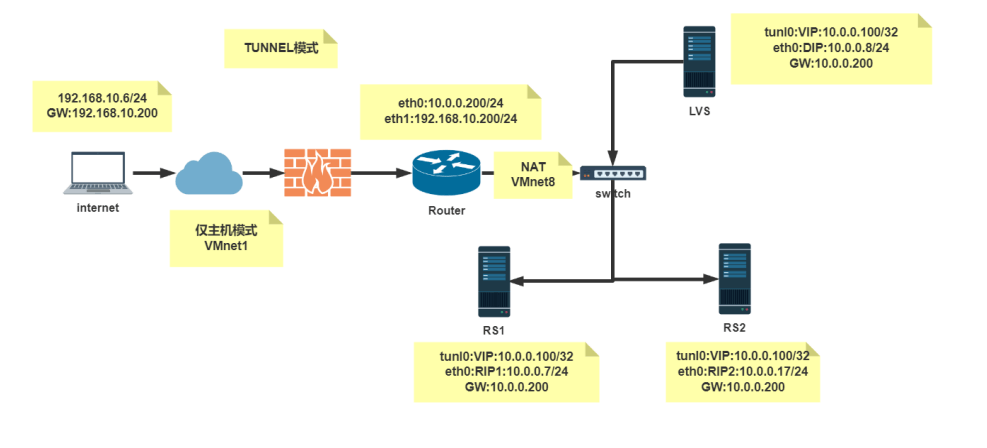
LVS服务器配置 1 2 3 4 5 6 7 8 9 10 11 12 13 14 15 16 17 18 19 20 21 22 23 24 25 26 27 28 29 30 31 32 33 34 35 36 37 38 39 40 41 42 43 44 45 46 47 48 49 50 51 52 53 54 55 56 57 58 59 60 61 [root@centos8 ~] 1: lo: <LOOPBACK,UP,LOWER_UP> mtu 65536 qdisc noqueue state UNKNOWN group default qlen 1000 link /loopback 00:00:00:00:00:00 brd 00:00:00:00:00:00 inet 127.0.0.1/8 scope host lo valid_lft forever preferred_lft forever inet6 ::1/128 scope host valid_lft forever preferred_lft forever 2: eth0: <BROADCAST,MULTICAST,UP,LOWER_UP> mtu 1500 qdisc fq_codel state UP group default qlen 1000 link /ether 00:0c:29:44:c3:fe brd ff:ff:ff:ff:ff:ff inet 10.0.0.8/24 brd 10.0.0.255 scope global noprefixroute eth0 valid_lft forever preferred_lft forever inet6 fe80::20c:29ff:fe44:c3fe/64 scope link valid_lft forever preferred_lft forever [root@centos8 ~] [root@centos8 ~] [root@centos8 ~] [root@centos8 ~] ipip 16384 0 tunnel4 16384 1 ipip ip_tunnel 28672 1 ipip [root@centos8 ~] 1: lo: <LOOPBACK,UP,LOWER_UP> mtu 65536 qdisc noqueue state UNKNOWN group default qlen 1000 link /loopback 00:00:00:00:00:00 brd 00:00:00:00:00:00 inet 127.0.0.1/8 scope host lo valid_lft forever preferred_lft forever inet6 ::1/128 scope host valid_lft forever preferred_lft forever 2: eth0: <BROADCAST,MULTICAST,UP,LOWER_UP> mtu 1500 qdisc fq_codel state UP group default qlen 1000 link /ether 00:0c:29:44:c3:fe brd ff:ff:ff:ff:ff:ff inet 10.0.0.8/24 brd 10.0.0.255 scope global noprefixroute eth0 valid_lft forever preferred_lft forever inet6 fe80::20c:29ff:fe44:c3fe/64 scope link valid_lft forever preferred_lft forever 3: tunl0@NONE: <NOARP,UP,LOWER_UP> mtu 1480 qdisc noqueue state UNKNOWN group default qlen 1000 link /ipip 0.0.0.0 brd 0.0.0.0 inet 10.0.0.100/32 scope global tunl0 valid_lft forever preferred_lft forever [root@centos8 ~] [root@centos8 ~] [root@centos8 ~] [root@centos8 ~] [root@centos8 ~] IP Virtual Server version 1.2.1 (size=4096) Prot LocalAddress:Port Scheduler Flags -> RemoteAddress:Port Forward Weight ActiveConn InActConn TCP 10.0.0.100:80 rr -> 10.0.0.7:80 Tunnel 1 0 0 -> 10.0.0.17:80 Tunnel 1 0 0
RS服务器配置 1 2 3 4 5 6 7 8 9 10 11 12 13 14 15 16 17 18 19 20 21 22 23 24 25 26 27 28 29 30 31 32 33 34 35 36 37 38 39 40 41 42 43 44 45 46 47 48 49 50 51 52 [root@rs1 ~] rs1.wang.org [root@rs1 ~] 10.0.0.7 [root@rs1 ~] Kernel IP routing table Destination Gateway Genmask Flags Metric Ref Use Iface 0.0.0.0 10.0.0.200 0.0.0.0 UG 100 0 0 eth0 10.0.0.0 0.0.0.0 255.255.255.0 U 100 0 0 eth0 [root@rs1 ~] [root@rs1 ~] 1: lo: <LOOPBACK,UP,LOWER_UP> mtu 65536 qdisc noqueue state UNKNOWN group default qlen 1000 link /loopback 00:00:00:00:00:00 brd 00:00:00:00:00:00 inet 127.0.0.1/8 scope host lo valid_lft forever preferred_lft forever inet6 ::1/128 scope host valid_lft forever preferred_lft forever 2: eth0: <BROADCAST,MULTICAST,UP,LOWER_UP> mtu 1500 qdisc pfifo_fast state UP group default qlen 1000 link /ether 00:0c:29:01:f9:48 brd ff:ff:ff:ff:ff:ff inet 10.0.0.7/24 brd 10.0.0.255 scope global noprefixroute eth0 valid_lft forever preferred_lft forever inet6 fe80::20c:29ff:fe01:f948/64 scope link valid_lft forever preferred_lft forever 3: tunl0@NONE: <NOARP,UP,LOWER_UP> mtu 1480 qdisc noqueue state UNKNOWN group default qlen 1000 link /ipip 0.0.0.0 brd 0.0.0.0 inet 10.0.0.100/32 scope global tunl0 valid_lft forever preferred_lft forever [root@rs1 ~] [root@rs1 ~] [root@rs1 ~] [root@rs1 ~] 校验。对每一个进行的数据包，校验其反向路径是否是最佳路径。如果反向路径不是最佳路径，则直接丢弃该 数据包；2标示开启松散的反向路径校验，对每个进行的数据包，校验其源地址是否可以到达，即反向路径是否 可以ping通，如反向路径不通，则直接丢弃该数据包。 [root@centos8 ~] 1 [root@rs1 ~] [root@rs1 ~] [root@rs1 ~] [root@rs1 ~] [root@rs1 ~]
测试 1 2 3 4 5 [root@internet ~] rs2.wang.org rs1.wang.org rs2.wang.org rs1.wang.org
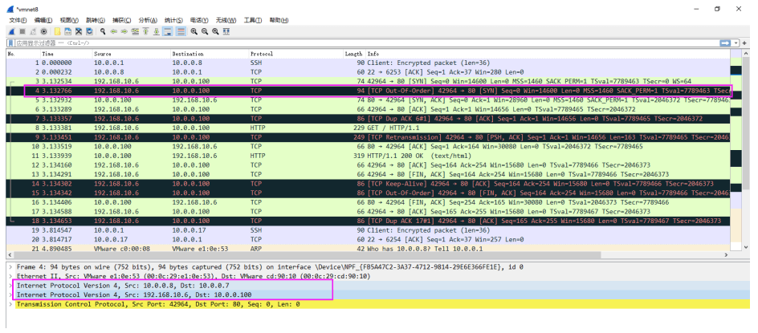
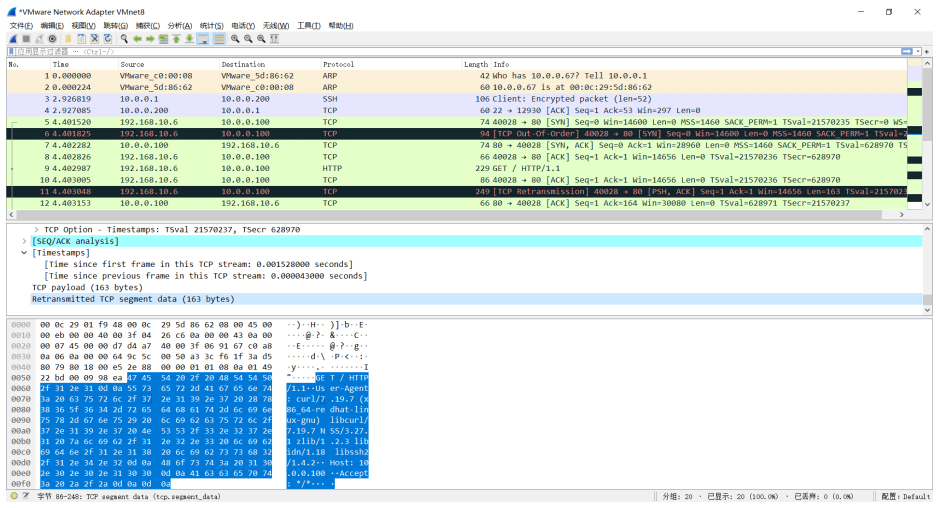
LVS 高可用性实现 LVS 不可用时：
Director不可用，整个系统将不可用；SPoF Single Point of Failure
解决方案：高可用，keepalived、heartbeat/corosync
RS 不可用时：
某RS不可用时，Director依然会调度请求至此RS
解决方案： 由Director对各RS健康状态进行检查，失败时禁用，成功时启用
常用解决方案：
keepalived
heartbeat/corosync
ldirectord
检测方式：
网络层检测，icmp
传输层检测，端口探测
应用层检测，请求某关键资源
RS全不用时：backup server, sorry server